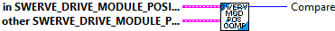
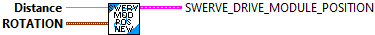

Compares two swerve module positions. One swerve module is "greater" than the other if its position is higher than the other.
Parmeters:
- this Module Position
- other Module Position - The other swerve module.
Returns:
- compare - comparison result where
1 if this is greater,
0 if both are equal,
-1 if other is greater.
Get the individual position (distance) (meters) and angle (radians) components of the Module Position data cluster.
Parmeters:
- Module Position -- data cluster
Returns:
- Distance -- Module distance (Meters)
- Angle -- Module angle (Radians)

Constructs a SwerveModulePosition.
Parameters:
- distance - The distance of the wheel of the module. (Meters)
- rotation -The angle of the module.
Returns:
- SwerveDriveModulePosition - Data structure